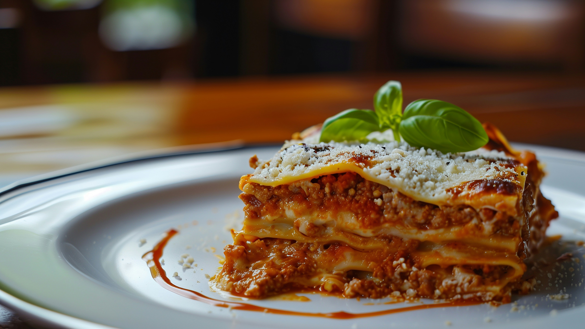

World's Best Lasagna
Home

Description
This classic lasagna layers tender pasta sheets with a slow-simmered meat
sauce, creamy ricotta filling, and plenty of melted mozzarella and
Parmesan. The sauce is rich and savory, built on ground beef, Italian
sausage, and tomatoes, while the ricotta layer adds a cool, silky
contrast.
It takes a little time to assemble, but it's mostly hands-off once it's in
the oven. Let it rest for 15 minutes before slicing so the layers set.
Serves 8 to 10, and it tastes even better the next day.
Ingredients
- 1 pound ground beef
- 1 pound Italian sausage, casings removed
- 1 medium yellow onion, diced
- 4 cloves garlic, minced
- 1 can (28 oz) crushed tomatoes
- 1 can (15 oz) tomato sauce
- 2 tablespoons tomato paste
- 2 teaspoons dried basil
- 2 teaspoons dried oregano
- 1 teaspoon salt, plus more to taste
- ½ teaspoon black pepper
- 15 ounces whole-milk ricotta cheese
- 1 large egg
- ½ cup grated Parmesan cheese, divided
- 2 tablespoons chopped fresh parsley
- 12 lasagna noodles
- 4 cups shredded mozzarella cheese, divided
Steps
-
Preheat the oven to 375°F (190°C) and lightly grease a 9x13-inch baking
dish.
-
Cook the lasagna noodles in salted boiling water according to package
directions until just al dente. Drain and lay them flat on a sheet of
parchment or foil so they don't stick.
-
In a large pot or deep skillet over medium heat, brown the ground beef
and sausage with the onion until no pink remains, about 8 to 10 minutes.
Drain excess fat.
- Stir in the garlic and cook for 1 minute, until fragrant.
-
Add the crushed tomatoes, tomato sauce, tomato paste, basil, oregano,
salt, and pepper. Simmer on low for 25 to 30 minutes, stirring
occasionally, until thickened.
-
In a medium bowl, mix the ricotta, egg, ¼ cup of the Parmesan, and the
parsley until well combined.
-
Spread about 1 cup of meat sauce over the bottom of the baking dish.
-
Layer 4 noodles over the sauce, then spread half of the ricotta mixture
on top. Sprinkle with 1⅓ cups mozzarella, then add 1⅓ cups of meat
sauce.
-
Repeat with 4 more noodles, the remaining ricotta mixture, 1⅓ cups
mozzarella, and another 1⅓ cups of meat sauce.
-
Finish with the last 4 noodles, the remaining meat sauce, the remaining
1⅓ cups mozzarella, and the remaining ¼ cup Parmesan.
-
Cover loosely with foil (lightly greased so the cheese doesn't stick)
and bake for 25 minutes.
-
Remove the foil and bake another 20 to 25 minutes, until bubbly and
golden on top.
- Let the lasagna rest for 15 minutes before cutting and serving.